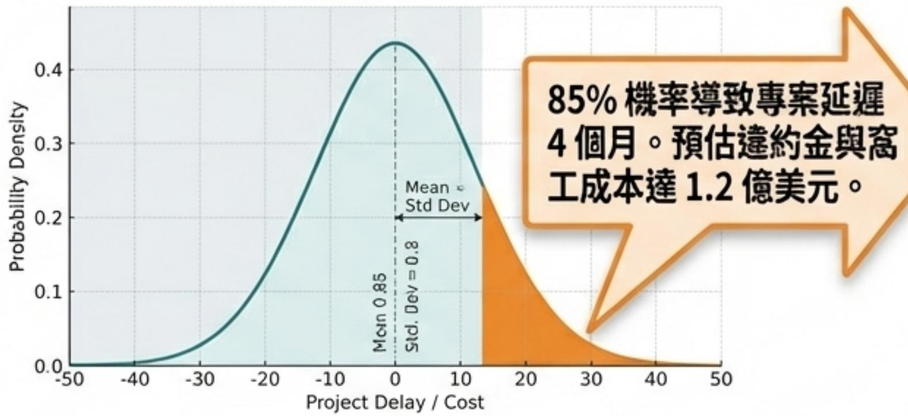

[事件觸發] 美國德州長交期設備延遲 12 週
Option A (Fail-Safe)
立即加價 10% 啟動備選供應商。
預計挽回時程：8 週。
Option B (Degraded Mode)
變更現場工序，先行施作非受災區塊。
預計挽回時程：3 週，維持當期估驗現金流。
蒙地卡羅風險分佈 (模擬)

[事件觸發] 美國德州長交期設備延遲 12 週
立即加價 10% 啟動備選供應商。
預計挽回時程：8 週。
變更現場工序，先行施作非受災區塊。
預計挽回時程：3 週，維持當期估驗現金流。
蒙地卡羅風險分佈 (模擬)
